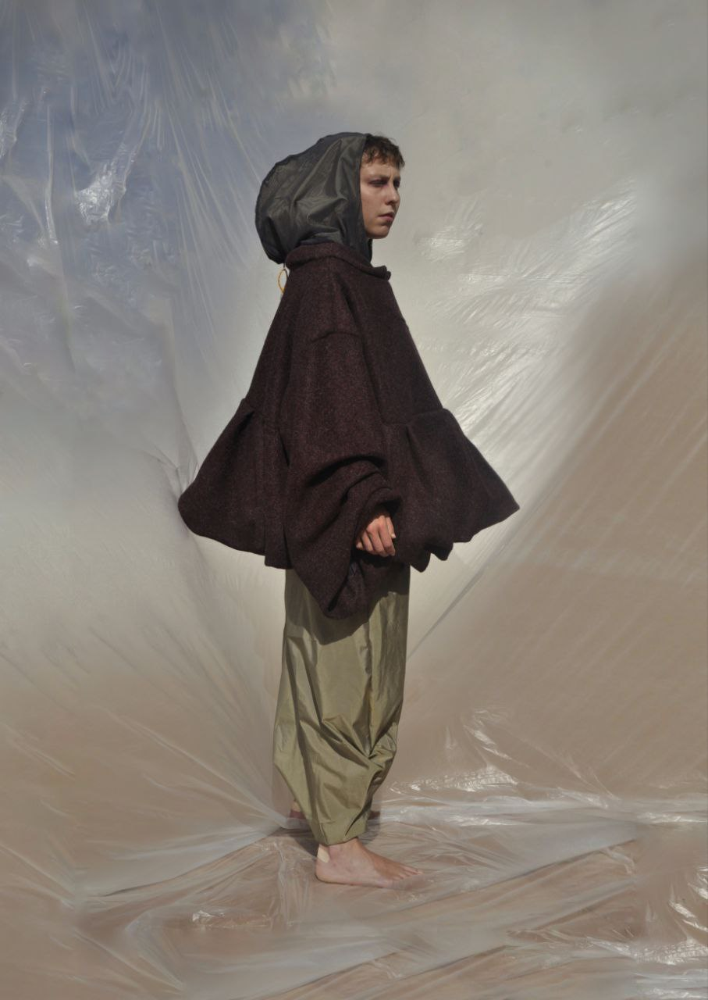

A.W. Final Collection, · 2024
A-liquida
Una ricerca tattile sul rapporto tra memoria, superficie e materia.
Year
2024
Category
A.W. Final Collection
Techniques
Surface Development

02 / 04
Memory translated into material.
Il progetto indaga il modo in cui materiali, superfici e texture possono evocare ricordi e sensazioni.
La ricerca è stata sviluppata attraverso manipolazione tessile, layering e prove sperimentali sulla superficie.